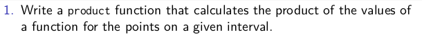
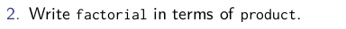
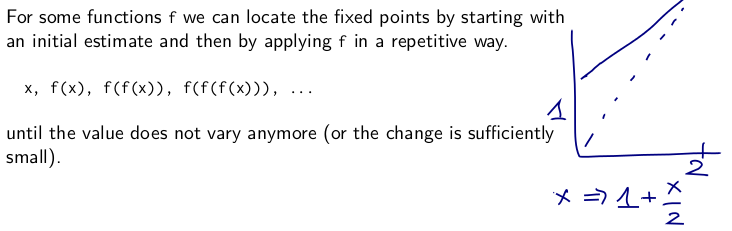
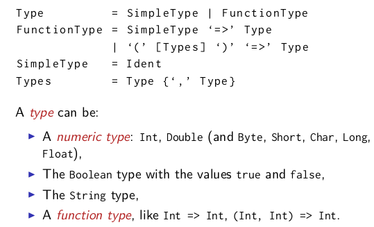
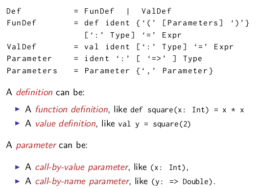
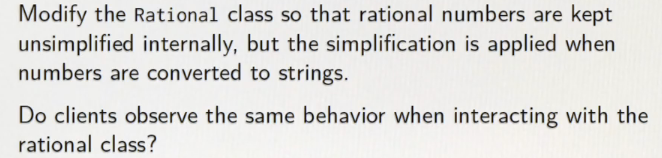
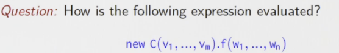
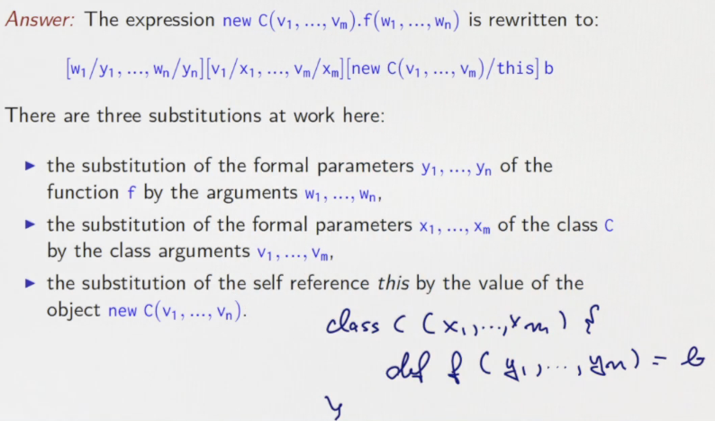
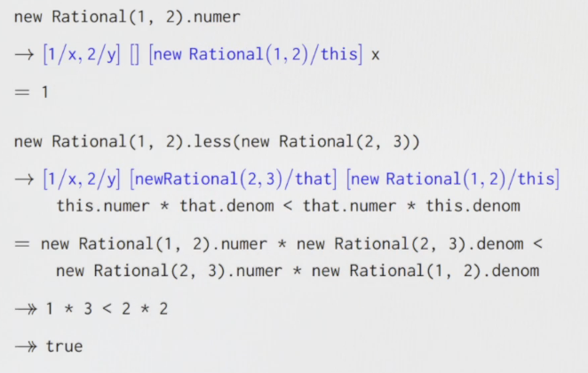
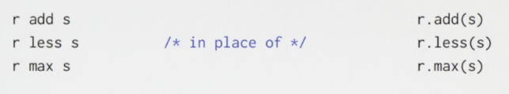

This week, we'll learn about functions as first-class values, and higher order functions. We'll also learn about Scala's syntax and how it's formally defined. Finally, we'll learn about methods, classes, and data abstraction through the design of a data structure for rational numbers.
2.1 - Higher-Order Functions
higher order functions: functions that takes functions as parameter or returns functions.
example:
⇒ put the f as a parameter
def sum(f:Int => Int, a: Int, b: Int):Int = {
if(a>b) 0
else f(a) + sum(f, a+1, b)
}
function types
A => B is a function that takes A as parameter and returns B.
Anonymous functions
"literals" for functions, syntactic sugar. ex.
(x: Int, y: Int) => x+y
(x: Int) => x*x
use anon functions in previous sum() function:
sum(x=>x, 1, 10) sum(x=>x*x, 1, 10)
exercice: turn sum() into tailrec fashion.
def sum2(f:Int => Int, a: Int, b: Int):Int = {
@tailrec
def sumTR(a: Int, acc: Int): Int = {
if (a > b) acc
else sumTR(a + 1, acc + f(a))
}
sumTR(a, 0)
}
(note: using namescoping to eliminate parameters in inner functions)
2.2 - Currying
define a function that returns a funtion
def sum3(f:Int => Int): (Int, Int)=>Int = {
def sumF(a:Int, b:Int):Int = {
if(a>b) 0
else f(a) + sum3(f, a+1, b)
}
sumF
}
when calling this function:
sum3(cube)(1,10)
syntactic sugar: shorter version of functions that return functions:
def sum3(f:Int => Int)(a:Int, b:Int):Int = {
if(a>b) 0
else f(a) + sum3(f)(a+1, b)
}
question: what is type of sum3?
→ Int => Int => (Int, Int) => Int
note: functional types are associated to the right,
Int => Int => Int is equivalent to Int => (Int => Int)
"currying"
exercice:

def product(f: Int => Int)(a: Int, b: Int): Int = {
if (a > b) 1
else a * product(f)(a + 1, b)
}
product(x=>x)(1,10)

def fact(n:Int) = product(x=>x)(1,n) fact(10)
def more_general(op: (Int,Int) => Int, default: Int) (f: Int=> Int)(a:Int, b:Int):Int = { if(a>b) default else op(a, more_general(op, default)(f)(a + 1, b)) } more_general((x,y)=>x+y, 0)(x=>x)(1,10)
老师的解法:
def map_reduce(f:Int=> Int, op:(Int, Int)=>Int, default:Int)
(a:Int, b:Int):Int = {
if(a>b) default
else op(f(a), map_reduce(f, op, default)(a+1,b))
}
def factorial2(n:Int):Int = map_reduce(x=>x, (a,b)=> a*b, 1)(1,n)
factorial2(10)
2.3 - Example: Finding Fixed Points
find the fix point of a function: x = f(x) 
val tol = 0.001
def isCloseEnough(x:Double, y:Double):Boolean =
math.abs((x-y)/x)<tol
def fixedPoint(f: Double=>Double)(firstGuess:Double):Double = {
def iterate(guess:Double):Double = {
if(isCloseEnough(guess, f(guess))) guess
else iterate(f(guess))
}
iterate(firstGuess)
}
fixedPoint(x=>1+x/2)(1)
using the fixepoint function for sqrt:
- sqrt(x) = y such that: x=y*y
- =y such that y = x/y
-
=fixed point for the function f(y)=x/y
def sqrt(x:Double):Double = fixedPoint(y=>x/y)(1) sqrt(2)
⇒ doesn't converge! ⇒ guess oscillates between 1 and 2... average damping: prevent the estimate from varying to much. ⇒ by taking the average of successive values
def sqrt2(x: Double): Double = fixedPoint(y => (y + x / y) / 2)(1)
abstract this damping technique:
def avgDamping(f:Double=> Double)(x:Double):Double = (f(x)+x)/2 def sqrt2(x: Double): Double = fixedPoint(avgDamping(y=>x/y))(1)
summary: The highest level of abstraction is not always the best, but it is important to know the techniques of abstraction, so as to use them when appropriate.
2.4 - Scala Syntax Summary
notations(EBNF):
|denotes an alternative[...]an option (0 or 1){...}a repetition (0 or more)
Types 
Expressions

Definitions 
2.5 - Functions and Data
example. rational numbers (x/y) define a class:
class Rational(x:Int, y:Int){ def numer = x def denom = y } val x = new Rational(1,2) x.numer x.denom
this definition creates both a class and the constructor.
now implement arithmetic:
def add(that: Rational) = new Rational(numer * that.denom + denom * that.numer, that.denom * denom) def neg = new Rational(-numer, denom) def sub(that: Rational) = add(that.neg) override def toString = numer + "/" + denom
2.6 - More Fun With Rationals
simplify the rationals at construction: add private members:
private def gcd(a: Int, b: Int): Int = if (b == 0) a else gcd(b, a % b) private val g = gcd(x, y) def numer = x/g def denom = y/g
other options:
- replace
gwithgcd(x,y) - turn
numeranddenomintoval
add less and max function:
def less(that:Rational) = this.numer*that.denom < this.denom*that.numer def max(that:Rational) = if(this.less(that)) that else this
preconditions
ex: avoid divide by 0.
require(y!=0, "denominator must be non zero")
→ java.lang.IllegalArgumentException: requirement failed: denominator must be non zero
requireis a test to perform when the class is initialized.
similar: assert()
constructor
in scala a class implicitly introduces a primary constructor:
- takes parameters of the class
- executes all statements in the class body
to add another constructor:
def this(x:Int) = this(x,1)
exercice:

override def toString = {
val g = gcd(numer, denom)
numer/g + "/" + denom/g
}
2.7 - Evaluation and Operators
evaluation for class/object
extend the substitution model to classes and objects

 
examples:

operator overloading
infix ops
any method with one parameter can be used as an infix operator. 
scala identifiers can bu symbolic:
⇒ change names to +, <, -, use in this way:
x + y x < y x max y x - y - z
unitary ops
now change the neg method: prefix operator, and might be confused with the sub(-)
⇒ it's name is special: unary_-
def unary_- = new Rational(-numer, denom)
precedence of ops
the precedence of an op is defined by its first letter order (by increasing precedence):
 quite the same as in java
quite the same as in java
Programming Assignment: Functional Sets
Mathematically, we call the function which takes an integer as argument and which returns a boolean indicating whether the given integer belongs to a set, the characteristic function of the set. For example, we can characterize the set of negative integers by the characteristic function (x: Int) => x < 0.
Therefore, we choose to represent a set by its characterisitc function and define a type alias for this representation:
type Set = Int => Boolean def contains(s: Set, elem: Int): Boolean = s(elem)

Comments !